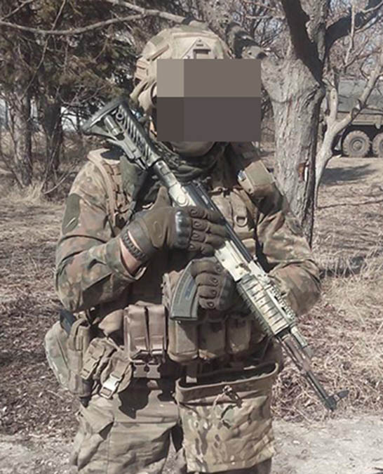
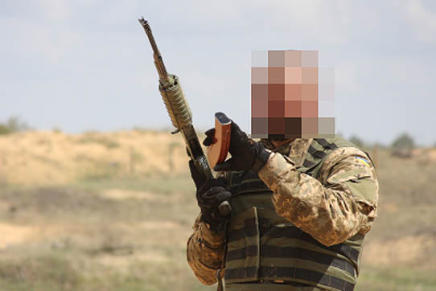
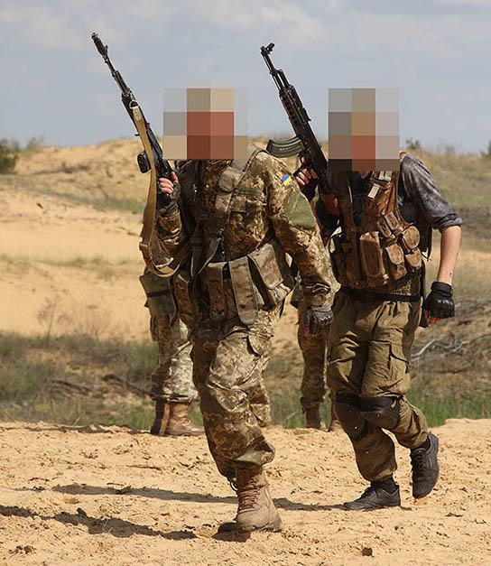
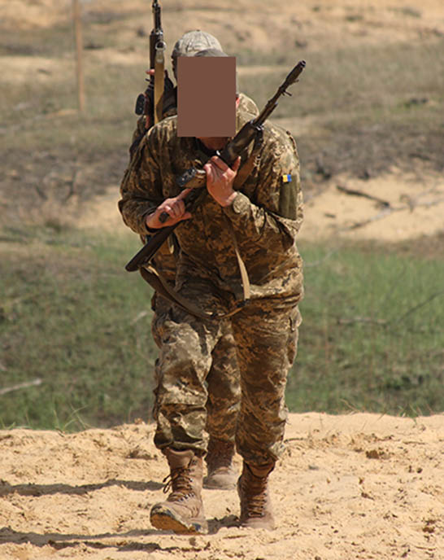
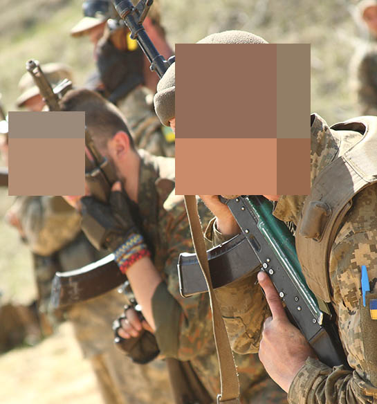
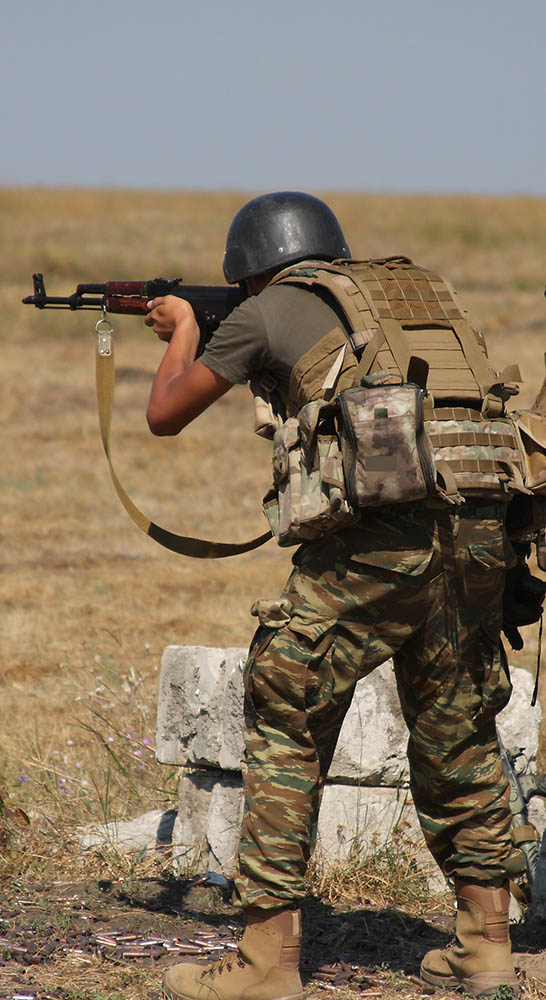
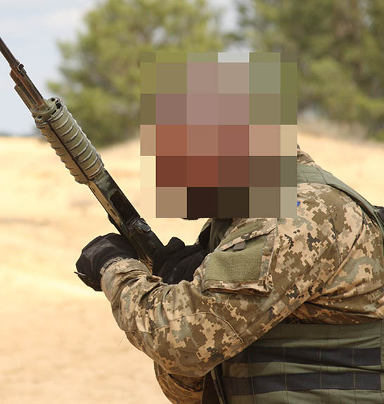

ІНДИВІДУАЛЬНА ПІДГОТОВКА
БАЗА.
Досвід АТО. Міри безпеки.
- Задавайте питання. Регулярно, не думайте, що це стидно. Стидно буде підвести своїх братів із-за
незнання і ліні. Краще з вас посміються, але ви зрозумієте все що треба Якщо не зрозуміли задачу
- перепитайте.
- На передньому краї всі переміщення здійснювати ОБОВЯЗКОВО зі зброєю, боєприпасами, в бронежилеті
та касці, з індивідуальною аптечкою. Ніколи не думайте, що наступний раз пронесе. Бій може
застати вас в будь-яку мить. І замість того, що одразу вклинитись в нього ви просто станете
баластом без зброї, боє припасів, засобів захисту, аптечки. Не слухайте "добрих" порадників, які
будуть розказувати, що тільки сикуни постійно лазять в броніках, а от вони красавчики нічого не
бояться. То все понти.
- Переміщення особового складу здійснюється по-двоє. При пересуванні на далекі відстані цій групі
має бути видана радіостанція.
- Невідомі предмети, озброєння тощо ніхто не торкається. Може бути заміновано. Зверніть увагу
особливо на шляху, яким ви добираєтесь до спостережника. Перепитайте інших бійців,
командирів хто поклав знайдений вами предмет. Попередити старших. При можливості
відмітити.
- Не брати продукти від громадського населення, не вживати з гражданськими алкоголь, не вступати в
статеві відносини. Можливі викрадення військовослужбовців.
- При обстрілі НЕ перебігати. Впасти та спробувати знайти якусь впадину, природну загороду тощо.
- Купи заліза, щебня, уламків тощо є поганим укриттям при обстрілі. Бо при вибухові утворюють
додаткову уламкову масу.
- В темний час дня має бути введено обмежене пересування на території РОПу. В ідеалі має бути
виділено патруль.
- Має бути максимально можлива кількість альтернативних засобів зв’язку:
- дротяний зв'язок (тапік)
- радіо моторола
- радіо баофенг
- інтернет зв'язок, соціальні мережі (вотсап)
- На новій позиції важливо продумати і відтренувати, щоб зрозуміти і засоїти всі нюанси, побачити
де важко прохожити, де каска злітає з башки, де окопи розширити, бо навіть один не проходить. Як
тащити тіло з другого, третього поверхів (якщо спостережник в будівлі). Як правильно тримати
тіло тощо.
- На спостережнику не ссать, якщо прм дуже треба то в бутилку, не палити, не жерти, не лишати
жрачку, бо миші розводяться в момент.
- Кожен солдат ЗОБОВ'ЯЗАНИЙ знати всі ключрві позиції РОПу(ротного опорного пункту): де
знаходиться КСП(контрольно-спостережний пункт), де точка евакуації, де спостережники сусідів,
які сектори крайні спостережників які межують з вашим. Взагалі-то ваш взводнік,
головний сержан або командир відділення сам має вас провести по всіх позиціях. Якщо цього не
відбулось самі попросіть, прям наполягайте. Може статися ситуація, що прийдеться маневрувати або
просто бігти на підсилення сусідів, а ви навіть не знаєте де вони. Також в АТО дуже часті
випадки коли сусідні позиції не точно або взагалі не знають де знаходиться сусід. Часто це
призводе до стрільби по своїх, дуже часто.
- Кожен солдат ЗОБОВ'ЯЗАНИЙ знати що має бути на спостережнику, при зміні нарідяв перевіряти
наявність майна, його цілість. В першу чергу це стосуєтья засобів спостереження, зв'язку, БК,
додаткова аптечка цього спостережника,ка там знаходиться завжди. Також мають бути журнал
спостереження (навіть якщо ти не розумієш на кой ляд він потрібен - не твоє діло), ручка,
карандаші, лінійка.
- В ідеалі всі ключові предмети на спостережнику мають лежати не аби як, а на певних місях, щоб в
сіматохі в темряі не шукати ях не врубати фонарик і не засвічувати як різдвяна ялинка
противнику. Взагалі нефіг фонаріком світити. Якщо вже берете фонарік, то вибирайте з червоним
фільтром. Зір вночі від нього "не тухне".
- Абсолютно кожен відповідає за збереження майна і бк на спостережнику і на ВОПі вцілому. Не треба
лінуватись або забивати. Завше прикривате по можливості. Бачите десь зіюоалась вода - протріть,
висушіть.
- Під час спостереження радєйка має бути при собі, а не десь на гвіздку. КАТЕГОРИЧНО заборонено
врубать музичні станції на радіостанції. Це відволікає і зводить до нуля спостереження. Ви в
такому разі фактично м'ясо і полонений.
- Спостереження має бути ПОСТІЙНИМ. Взагалі не має бути такого, щоб з двох спостерігав лиш один.
Обидва зобов'язані спостерігати. Але реальність АТО показала, що бувають відділення по 6-4 людей
і часто приходиться окапуватись в наряді. Тим не менше ОДИН ЗАВЖДИ СПОСТЕРІГАЄ. При чому в два
рази уважніше.
- Якщо на позиції є ПК(ПКМ) то пристібнутий маленький короб на 100 патронів не заряжається, а
використовується стріка із великого коробу, що ставиться поряд. У випадку, якщо прийдеться
переміщатись з позиції у вас на ПК завше буде невелиий бозапас.
- Якщо командир не заставляє, то ви самостійно старйтесь будувати додаткові вогневі позиції. В
ході "перестрілки" з протвником, він може зосередити по вашій вогневій точці вогонь, тоді,
повірте, ви носа не висунете. Не лінуйтесь, обладнуйте додаткові, тільки попередьте звичайно про
це комнадира, він має знати всі зміни , що відбуваються на ВОПі.Дужепоширена проблема: не
пуляйте вогами 25-ми по-перше корішезавсе вони банально не долітають, по -друге їхдуже мало. І
коли буде нагода реально ефективно жахнуть ними їх просто не буде бо ви з корєшами заскучали...
- Вчіться, вчіться...Чим більше ви знаєте, тим вища якість вашого спостереження, відповідно більш
достовірна інформація доходить до вищіх інстанцій Відповдно більш ефективним буде вогонь важчих
вогневих засобів, ніж ваша пукалка. Доречі, якщо старший начальник знає, що з певних постів
приходять адекватні доповіді, то вірогідність використання вогневих засобів вищого порядку
набагато вище на мій погляд. А якщо ви постійно допвідаєте якусь пургу... Ви маєте знати
декілька способів визначити відстань до об'єкта спостереження, доповіати чітко.
- Коли ведеться вогонь по вашій позиції або по сусідах НЕ ТРЕБА по радіостанції репетувати що до
вас не долетіло прям 50 метрів - ви тупо коректуєте противника. Вас слухають по-любому. В ідеалі
користуватись тапіками завжди. Радіостанція на крайняк.
- Ніколи влаштовуйте трьоп по радіостанціях. По-перше ви забиваєте хвилю. По друге противник який
собі це дозволяє одразу видає себеяк, такого що не представляє загрози. Якщо звиайно у вас не
столо такого завдання. По радіостанції мінімум інформації.
- Досить гарно показали себе "ящики з БК". Що вони представляли з себе в нашому підрозділі:
брали декілька ящичків від ручних гранат, їх комплектували певним калібром БК, наприклад
тільки 7.62х39 або тільки 5.45;
додатково туди вкладалося декілька оборонних гранат Ф-1,
пару димів при наявності;
ящик підписувався в залежності від основного БК, що в ньому;
таких ящичків на СП взводу ми мали десь чотири, по два на кожен калібр;
при необхідності
піднести БК на позицію вже все готово, вони легко переносяться;
ніщо не заважає зробити теж
саме дл калібру 12,7 і т.п.
Експлуатація екіпіровки, приладдя.
Правила експлуатації зброї та екіпіровки.
- Завжди бережно ставитись до своєї зброї та екіпіровки. Від цього залежить моє життя.
- Регулярно контролювати чистоту своєї зброї та екіпіровки в будь-яких умовах. Ніколи не стріляю з
нього, не переконавшись, що цьому не заважає бруд, багно, «чохол» чи затичка.
- Ніколи не передавайте вручену вамі екіпіровку чи елементи тюнінгу зброї без відома і дозвола
старших командирів іншим. Якщо командир дав її вам значить йому видніше. Можливо він
вважає, що ви використаєте її ефективніше.
- Не відмовляйтесь від використання виданого приладдя і не здавайте його самовільно лиш по
причині, що не знаєте що з ним робити. Підійдіть до начальника, хай вчить - це його
обов'язок.
- Якщо зброя чи предмет екіпіровки стали непридатними для використання, при першій же можливості
повідомляйте про це командира. НЕ скривайте факт поломки від командира, бо від цього залежить
ваше життя і життя побратимів. Командир розраховує, що у вас є певні засоби.
Базовий піхотний набір екіпіровки, який постійно має бути при собі при переміщенні по опорнику (те, що
не стосуєтьс життєдяльності, а необхідно для несення служби).
- Бронежилет. Плитоноска з системою MOLLE.
- Каска, до неї бандана чи балаклава в теплу пору року, підшоломник в холодну.
- Окуляри тактичні
- Беруші чи активні навушники
- РПС. На мій погляд чисто польова штука. В окопах дуже незручно, десь постійно чіпляється.
В умовах окопів краще гарна плитоноска, на яку збоку можна приєднувати підсумки. Тим більше, що
доступ до БК у вас і так буде на позиції.
- 6 магазинів.
- Наколінники (обов'язково), налокотники (як мінімум на неосновну руку, на яку ви можете опертись
при стрільбі).
- Рукавички тактичні з довгими пальцями.
- Сумка для скидання пустих магазинів (краще розміщати зпереду з боку тої руки, якою від'єднуєте
магазин; можливий варіант двох підсумків - один зпереді, один позаду).
- Індивідуальна аптечка, що включає в себе всі елементи згідно списку. В ідеалі розміщення аптечки
на екіпіровці має бути у всіх військовослужбовців підрозділу в одному місці (щоб при потребі не
витрачати час на пошуки).
- 4 засоба жгутування (на кожну кінцівку), включаючи ті, які є в аптечці. Один жгут бажано на
лівому плечі (або десь на передній частині плитоноски).
- Компас.
- Годинник ручний.
- Фляга з водою. Загальний об’єм води при собі не менше 1 л. Маєте кемл-бек? Най так і буде.
Головне, щоб була вода.
- Ніж (хоча б один розкладний). А так-то непогано, щоб їх було 2. Наприклад, один на нозі, один на
плитоносі (чи на поясі, як варіант), але так щоб був доступ і бажано обома руками. Не треба, щоб
то було обидва "тєсаки" . На плитоносі досить розкладного.
- Ліхтарик + комплект батарейок. Дуже в нагоді стане налобний. Ліхтарики краще з червоним
фільтром, таке світло не видно здалеку. Налобний як раз буде добре із таким фільтром, ну а
другий нормальний без фільтру. Якщо маєте планку Пікатіні бічну на автоматі, непогано мати до
ліхтарика спец кріплення
- Запальничка, краще "турбо".
- Недовга мотузка (паракорд).
- Ізолєнта (армований скотч) . Доречі армований скотч і в аптечці не завадить.
- Ключ для цинка.
- Блокнот, коротка лінійка, олівець, точилка (ну це вже розкіш), ручка. Бажано, щоб в блокноті
були записані основні формули і дані, які можуть знадобитись.
- Заряджений телефон. Power bank не завадить. Щоб не таскати в кармані, корисно придбати підсумок
на MOLLE щоб таскати прям на плитоносі. Тільки при виборі місця де той підсумок розташувати
враховуйте, щоб на нього не прийшлася вся вага при падіння на землю.
- 4 наступальні гранати (зазвичай запали носити треба окремо від гранат, придумайте де їх
розмістити, щоб мати швидкий доступ; ви завше матимете час, щоб приєднати запали у випадку
тривоги на ВОПі, ну а перед виходом, наприклад, ви і так будете заздалегідь їх готувати ).
- Набір для чистки зброї.
- Пластикові наручники (штука дуже корисна, якщо є).
- Дріт від ПТУРа - трохи дроту ніколи не завадить.
- Мультитул - останній по списку, але не останній за необхідністю. Якщо у вас, наприклад, він не
дуже дорогий, то не завадить додатково мати при собі невеликі кусачки для дроту (часто
виручали), бо рідні доброї якості тільки на дорогому мультитулі.
- Якщо маєте коліматор, спеціальну ганчірку для оптики. Запасні батарейки на коліматор.
Додатково корисне майно (це вже по ситуації):
- Вологі серветки - воно тобі і помитися, і жопу підтерти
- Ложка (є непогані компактні набори з вилки, ножа, ложки)
- Кружка (є багато непоганих варіантів з карабіном)
- Дими
- Саперна лопатка
- Плащ-палатка (пончо).
- Невеликий рюкзак, де можна переносити додаткове БК і т.п.
- Карімат - піджопник.
- Карімат нормальний багатослойний.
- Маленький спальний мішок на заміну, тому що видають в ЗСУ.
- Арафатка.
Правила поведінки зі зброєю. Порядок перевірки зброї на розрядженність. Ступені готовності зброї.
Ступені готовності зброї.
4 правила поведінки зі
зброєю:
- Завжди відношусь до зброї як до зарядженої.
- Не направляю зброю туди, куди не збираюсь стріляти.
- Не ложу палець на спусковий гачок до того, як прийняв рішення на постріл.
- Завше контролюю що знаходиться перед ціллю і за ціллю.
Дане правило, вважаю, потребує роз'яснення. По суті воно означає, що під час ведення стрільби
перед ціллю може з'явитись людина або об'єкт по якій вогонь вести заборонено. Наприклад, якщо ви
реалізуєте стрільбу в русі і рухаєтесь в шеренгу, то сусід або бойова пара може зміститись в ваш
сектор ведення вогню. Маєте це контролювати.
За ціллю відповідно теж можуть з'явитись небажані люди цивільні або солдати з іншого союзного
підрозділу тощо
Порядок перевірки на розрядженність зброї (нестандартний варіант в положеннях сидячи, стоячи)
- автомат затискається прикладом під мишкою, ствол дивиться вгору;
- від'єднується магазин;
- автомат провертається затвором вниз, знімається із запобіжника;
- затвор відводиться в заднє положення (так, щоб патрон, якщо він є в автоматі, випав під ноги
стрілку) і повертається назад;
- автомат провертається затвором вгору, затвор відтягується в заднє положення і стрілок візуально
перевіряє відсутність в патроннику патрона; затвор повертається в переднє положення;
- Контрольний спуск, на запобіжник.
!!!ПОСТІЙНО під час перевірки зброї на розрядженність контролюєте направлення дула.
Способи утримання автомата в залежності від тактичної обстановки. Фронтальна стрілкова стойка. Вскидка з
різних підготовчих положень. Ведення вогню з фронтальної стойки. Види пострілів.
Способи утримання автомата в залежності від тактичної обстановки.
Звичайно сприймати в цьому розділі інформацію без фотографій дуже важко. Так як
зараз вже не служу, то не маю доступу до зброї. По можливостю додам зображення.
Способи попереднього утримання автомата в залежності від тактичної
обстановки.
- Перед собою дулом вниз (пріорітетний спосіб утримання)
- дуло дивиться вниз приблизно на 45 градусів відносно корпусу;
- ствольна коробка паралельна корпусу, створюючи додатковий захист тіла;
- приклад «на плечі»
- середній (чи вказівний палець) на запобіжнику, в готовності по команді привести зброю в
готовність до пострілу;
Може використовуватись в різних випадках. З нього дуже зручно і швидко виводити автомат для стрільби
навскид з плеча. коли приклад лежить зверху на плечі, ствольна коробка фактична паралельна підлозі.

- Утримання дулом вгору в одній руці.
Автомат фіксується в одній руці шляхом затискання приклада під мишкою. Дуло на 45 вгору можна і вище.
В такому положенні набагато легше переносити автомат, так як частина ваги за рахунок ричага
переходить на корпус. Досить зручно здійснювати переміщення, навіть.
З мінусів: дуло знаходиться значно вище голови, є вірогідність зачепити розтяжку тощо. Трохи більше
часу витрачається для переходу з цього в положення для стрільби.
Може використовуватись за технікою, в бойовій групі або як безпечне похідне положення.


- На плечі. Примінимо в приміщеннях при досмотрових діях. При роботі із-за
будівлі.
- Зправа, зліва від плеча затиснуте. Примінимо в приміщеннях. При "нарізанні"
кутів при досмотрових діях -зачистках. Автомат добре вказує лінію за яку не можна висувати
корпус, щоб не виявити себе перед прихованим противником.
- Утримання дулом вгору.
Лівою рукою за цівку, права рука на пістолетній рукоятці
Може використовуватись за технікою, в бойовій групі. Як на мене, саме незручне і досить небезпечне
утримання.


Фронтальная стойка.
- Постановка фронтальной стойки:
- Приклад в ямке, поближе к челюсти;
- Устойчивая позиция;
- Плечи приблизительно в одну линию перпендикулярно линии ствола;
- Плечо основной руки «вворачивается вперед»
- Левая рука на цевье или за магазин;
- Корпус подается вперед, спина ровная;
- Колени присогнуты;
- Автомат прижимается к телу больше левой рукой;
- Локти максимально прижимаются к габариту для большей устойчивости и для уменьшения силуэта;
- тренировочная стойка выставляется так, что ноги в одну линию параллельно корпусу на ширине плеч.
По факту боевая стойка предпологает отведение правой ноги назад, при этом положение корпуса
остается тем же (фронтально к противнику)

Види пострілів.
В залежності від тактичної ситуації та відстані до цілі можна використовувати різні види пострілів:
- одиночні;
- вірна пара;
- флеш (до 100 м);
- черга (ближняя дистанция стрельбы).
Упражнение
Автомат берется в одно из ППС (предварительное положение). На «и» автомат выводится
вперед, на «раз» автомат выводится в положение для стрельбы. На повторное
«и» снова вперед, на «раз» в подготовительное положение. И таким образом
упражнение повторяется.
Когда это наработается, то можно усложнить упражнение.
Упражнение №1 «Цель (Контакт)»
- Группа становится в шеренгу лицом к линии мишеней, занимает фронтальную стойку, проверяя все
элементы соответственно правилам. Ствол берется в одно из ППС, оружие на изготовке, приклад
упирается в плечо. По команде «Цель» боец сводится на цель, прицеливается, производит
выстрел по мишени и возвращается в подготовительное положение для стрельбы. Руководитель занятия
предварительно выбирает вид выстрела.
Со стрельбой:
- Группа заряжает, например, 4 магазина по 10 (число патронов может варьироваться в зависимости от
целей) патронов, с целью одновременной тренировки перезарядки оружия.
Усложнение:
Если человек перезаряжается , то в этот момент можно подать команду «Цель». Если он
считает патроны, то у него в патроннике должен быть патрон и он может произвести выстрел по
появившемуся противнику.
Упражнение № 2 «Стрельба со сменой целей.»
Выставляется некоторое парное число мишеней. По команде боец делает выстрел по одной крайней мишени,
потом по второй крайней. Каждый раз смещаясь на одну мишень внутрь.
Вид выстрела выбирается руководителем стрельбы заранее.
Способи перезарядки автомата. Сигналізація в групі про стан зброї.
Способи перезарядки автомата
Звичайно сприймати в цьому розділі інформацію без фотографій дуже важко. Так як
зараз вже не служу, то не маю доступу до зброї. По можливостю додам зображення.
Навичка перезаряджання є базова і є одною з найважливіших для піхоти. Від неї
залежить ваша фактична швидкострільність. Якщо вона завчена до автоматизму, то вплив бойового стресу
набагато зменшується (під час бою не можете попасти магазином в роз'єм на ствольній коробці, не
можете одразу відстібнути магазин і т.п.
Способи перезарядки автомата різняться в залежності від тактичної ситуації. Так наприклад
розрізняють:
- По техніці перезарядки екстрена і тактична
- За положенням зброї: з убиранням автомата з лініі прицілювання і з залишанням його в бойовому
положенні (направленим в сторону противника).
- З пониженням силуета при перезарядці і без
- Перезарядка під час руху
Базові принципи перезарядки:
- При потребі перезарядитись солдат голосно кричить «Красний» (або "Пустий", можно
повторити пару раз для того, щоб сусід почув) і починає перезарядку.
- При стрільбі з місця, якщо дозволяє тактична обстановка, при уході на перезарядку, варто
понизити силует (коліно, присіст тощо), а в ідеалі ще й зміститися. Таким чином ви не лишаєтесь
на лініїї вогня не стріляючим.
- Більш удобно спочатку діставати повний магазин, який будемо приєднувати, а потім займаись
відєднанням, а не навпаки. Особливо, якщо рахуєш патрони і залишає декілька в магазині, то поки
дістаєш новий, ти ще лишаєшся боєздатний.
- Після закінчення перезарядки і прийняття положення для стрільби боєць подає команду «
"Готовий"». Після першого пострілу можна подати команду «Зелений», що
сигналізує про справність автомату.
Основні способи утримання автомата при перезарядці:
- Правой рукой держим автомат, оставляя его упертым прикладом в плечо так, что ствол смотрит в
сторону противника и параллелен полу. При этом левая рука манипулирует магазинами. Для удобства
можна слегка проворачивать ствол относительно плеча влево и вправо. Также для облегчения
удержания ствола можно упираться щекой на приклад.
- Автомат зажимается прикладом под мышку, ствол смотрит или вверх, или вниз, манипуляции с
магазином проводим левой рукой. Когда надо прворачиваем ствол относительно своей оси влево
вправо для удобства примыкания магазина и передергивания затвора

- «Радянський» спосіб утримання, коли автомат береться в ліву руку за цівку. Ствол
направляється в поле. Перезарядка магазина відбувається правою рукою. По факту, як на мене, в
положенні лежачі більш зручний.
Способи зміни магазина.
- Повільний спосіб «Один магазин» полягає в тому, що спочатку ви
від’єднуєте магазин і кидаєте його в сумку скидання або затискаєте під коліном (а скидаєте
в сумку потім), якщо знаходитесь в «середньому» положені. Дістаєте новий магазин,
пиєднуєте до автомата, досилаєте патрон, якщо необхідно.
- В першому варіанті є альтернативний спосіб відєднання магазину: левая рука ставится ладонью к
ствольной коробки так, чтобы прикосновение к рычагу производилось ребром указательного пальца.
после прижатия магазин оказывается в обратном положении в руке
Другий спосіб «Два магазина» одночасного утримання двох магазинів: за
необхідності дістаєте з підсумка новий магазин, тримаючи його ладонню десь за середину, приставляєте
його до ствольної коробки на рівні з приєднаним магазином, так, щоб велики палець лівої руки
діставав механізму відєднання магазину
Екстренна перезарядка
Суть екстреної перезарядки полягає в тому, що магазин, який приєднаний до автомата не
від’єднується рукою і не кладеться в підсумок скидання, а відщолкується іншим (повним
магазином). В результаті той падає на землю. По факту це найшвидший спосіб перезарядити зброю. Мінус
такого способу полягає у втраті магазину.
ВПРАВИ
МТЗ: Автомат, два магазина.
Умова виконання вправи: Відділення стає в шеренгу. Подається команда «УВАГА». Піхотинець
утримує автомат однією рукою в положенні для стрільби, в лівій тримає додатковий магазин. Керівник
починає рахувати від одного до 20. На кожний рахунок піхотинець виконує заміну магазину способом,
яким вказав керівник заняття.
Звичайно можна виконувати вправу з пустими магазинами. Ну а для новобранців це навіть обов'язкова
умова. Якщо ж військовослужбовець вважається досвідченим, тобто таким, що знає і приміняє правила
обережного поводження із зброєю, то звичайно ефективніше відпрацьовувати із зарядженими магазинами.
Дуже важливо відпрацьовувати перезарядку автомата з різних положень: стоячи з "стволом" направленим в
сторону противника, стоячи приклад під мишкою, з коліна з такими ж двома положеннями, навіть в
положенні "присіст". В положенні лежачи.
Використані джерела
- З приводу порад першого розділу, то це з того, що ми приміняли, та чого намагались
дотримуватись.
З того, що я памятаю та братюні нагадали
- З приводу індивідуальної вогневої - інфа в основному з тих навчань та інструктажів, що
проводились в нашому
підрозділі спеціалістами. Деякі прийоми я вирішив не включати, в силу того, що ми визнали їх
неефективними на практиці.
"ВЕТЕРАНИ ГОВОРЯТЬ"
Можливо є щось з Вашого досвіду з цієї тематики, чим би могли поділитись, що могло б стати в нагоді
побратимам
Напишіть і я розміщу це в низу статті в окремому розділі